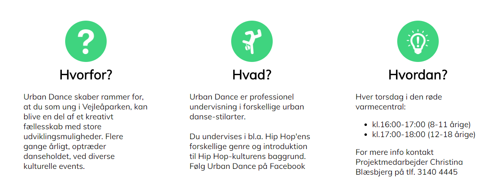

Kommunikationsmæssigt
Webcontent - vi valgte strategisk og praktisk at producere fængende tekster målrettet de forskellige målgrupper og taler direkte til modtageren i stedet for i 3 person. Det er mere personligt orienteret webcontent.
Interessentanalyse. En kort analyse fordi vi havde brug for at vide hvem har indflydelse og hvem påvirkes. Vi har efterfølgende på kontaktsiden implementeret interessenterne med kontaktinfo og links.
Målgruppeanalysen baserer vi på Deskresearch - indsamling af empiriske data (data og observationer) fra artikler ud fra kildekritisk grundlag. Kilderne er: DR, TV2Lorry, kulturarv, jyllandsposten, boligforeningernes website og Landsbyggefonden.
Personas - vi benytter en narrativ tilgang, og beskriver dem ud fra personer vi finder på facebooksiderne der liker opslag. Vi bruger personaer til at danne os et stærkt billede af modtageren, så vi ved hvordan siderne med webcontent skal designes, så de er mest brugervenlige. Vi deler derfor undersider op i hvorfor, hvad og hvordan, så indhold er overskueligt og nemt at finde.
Brugerscenarierne visualiserer hvad sker der, når vores persona Fatima bruger produktet. Hun søger information om aktiviteter i Urban Academy og under hvornår finder hun hurtigt tider og hvor det foregår. Vores valg af inddeling af undersider gør det nemt for modtageren at finde den præcise oplysning hurtigt

Brugertest - Usabilitytest Pga. tidspres optager vi en hurtig test, fordi vi har brug for at vide om brugeren kan bruge den nye prototype 2, det nye website. Vi stiller dem 5 spørgsmål der skal afgøre om vi kan vurdere om sitet er brugervenligt. Testen viser prototype 2 er brugervenlig, og de roser den
Gangstertest - Test af Informationsstruktur - afslører at prototype 2 gør det meget nemmere at finde rundt på sitet. Usability er i top på p2.